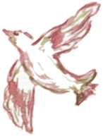
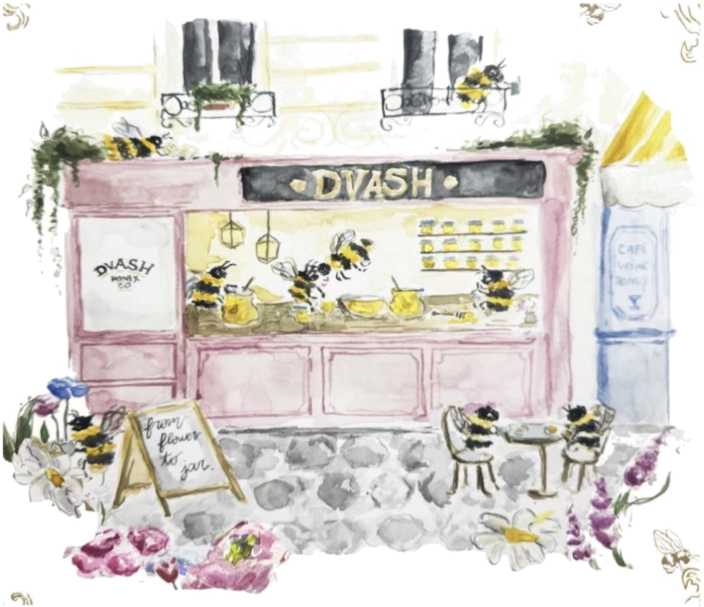

Bautizos
Su nombre en dorado, de regalo
En cualquier Biblia de la colección para un bautizo: grabamos el nombre del bebé sin coste.

¡Cuán dulces son a mi paladar tus palabras! Más que la miel a mi boca.
Salmo 119:103
Biblias pintadas a mano, para la Palabra que es más dulce que la miel.
ver la colecciónCada Biblia lleva un versículo propio en la contraportada.
Solo este mes
Pequeños detalles para estrenar el taller. Válidas hasta el 30 de noviembre o hasta agotar telas.
Bautizos
En cualquier Biblia de la colección para un bautizo: grabamos el nombre del bebé sin coste.
Bodas
Una para cada uno, con las iniciales de los dos y la fecha del sí en el lomo.
Novedad
Abrimos una tiendita en el barrio de Salamanca: ven a ver las telas y elegir tu diseño con nosotras.
−10 % primer encargo Ver horario →Dvash · דבש · miel
Dvash significa miel en hebreo. Creemos que la Biblia que abres cada mañana merece ser tan dulce por fuera como lo es por dentro.
Cada tapa nace de una acuarela original, se imprime sobre algodón y se termina a mano, con detalles en dorado. Piezas pensadas para leer, regalar y heredar.
nuestra historiaRamas verdes en acuarela sobre lino crudo. Silencioso, natural, sin nada que compita.
Una primera Biblia con su nombre en dorado, para que la abra cuando sepa leer y la guarde cuando sea mayor.
encargarEl taller
Nº 01
Acuarela
Cada diseño se pinta a mano en el estudio.
Nº 02
Impresión en tela
Sobre loneta de algodón, en una imprenta del barrio de Salamanca.
Nº 03
Forrado
La tela se ajusta y se forra a mano, pieza a pieza.
Nº 04
Dorado
Hot stamping en un taller artesanal de Madrid.

Horario y ubicación
Una fachada rosa en el barrio de Salamanca. Ven a tocar las telas, ver las acuarelas y elegir tu diseño con nosotras. Siempre hay café, y alguna abeja.
Consultando horario…
Una vez al mes: nuevos diseños, el proceso desde dentro y, a veces, un versículo que no nos podemos quitar de la cabeza. Y un 10% en tu primer encargo.